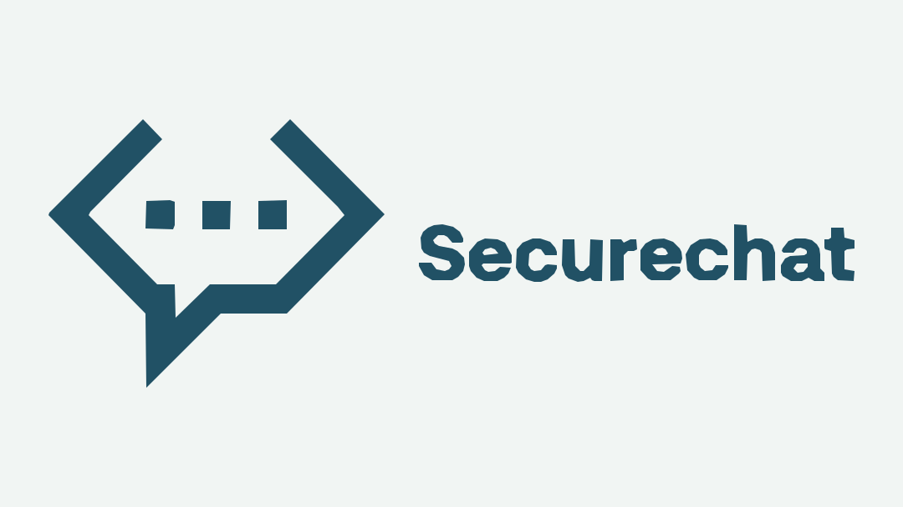

DESKTOP CONNECTION SETUP
SecureChatに接続
SecureChat本体が稼働しているHTTPSアドレスを入力してください。ログイン、連絡先、暗号化チャット、端末管理、SecureDropは接続先のSecureChatと同じ機能・アカウントを使用します。
このアプリは入力したSecureChatサーバーのWebアプリを安全な分離設定で表示します。接続先が未設定の場合、オンラインログインやメッセージ送受信はできません。

DESKTOP CONNECTION SETUP
SecureChat本体が稼働しているHTTPSアドレスを入力してください。ログイン、連絡先、暗号化チャット、端末管理、SecureDropは接続先のSecureChatと同じ機能・アカウントを使用します。
このアプリは入力したSecureChatサーバーのWebアプリを安全な分離設定で表示します。接続先が未設定の場合、オンラインログインやメッセージ送受信はできません。